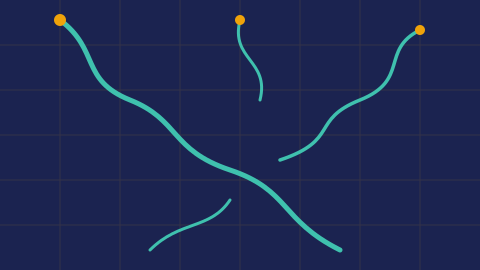
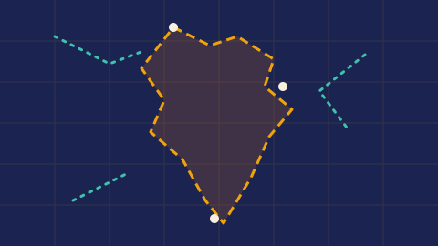

-

01india-rivers
An interactive map of India's rivers. Click a river to see its length, where it rises, what it flows into and, for some, a fun fact.
Open the map ↗ -

02india-borders
Every Indian border, mapped. Choose two neighbours to read the dated history of the border between them, with sources.
Open the map ↗